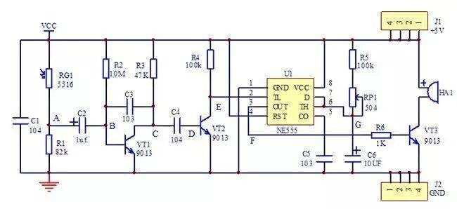
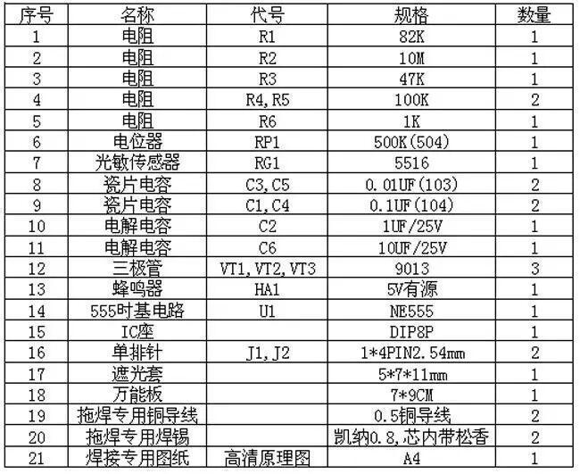
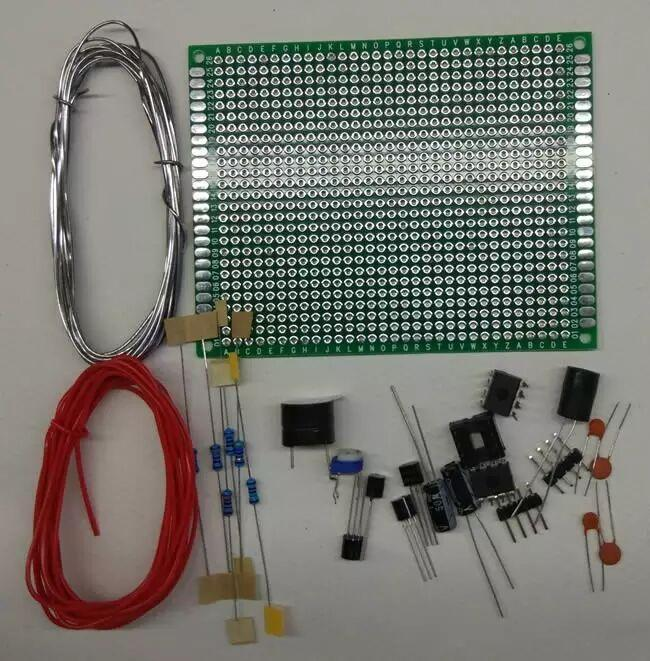
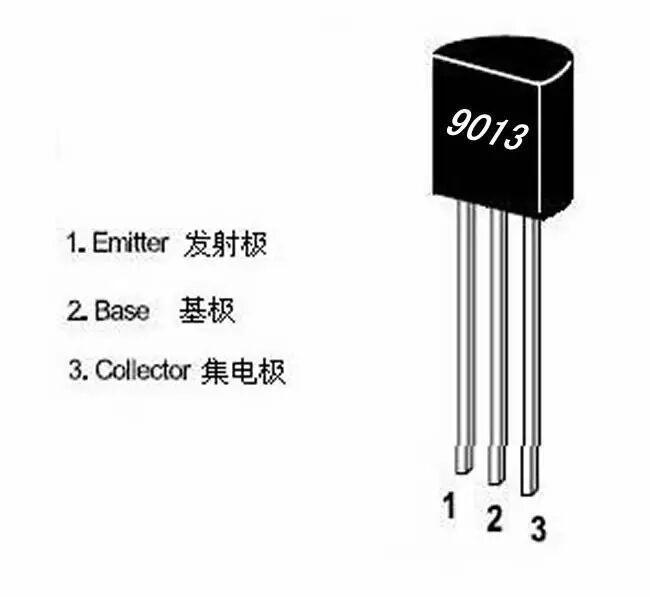
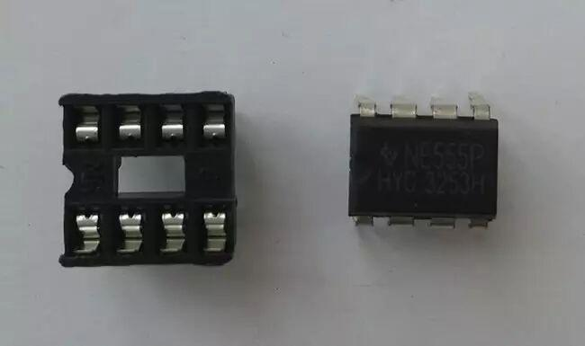
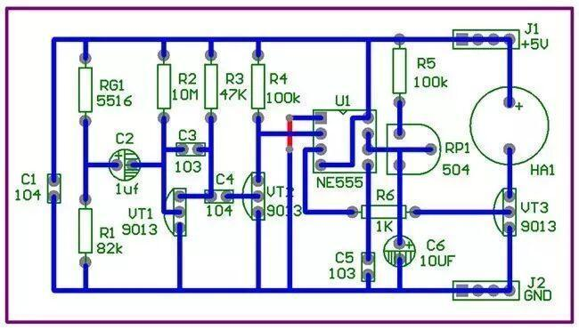
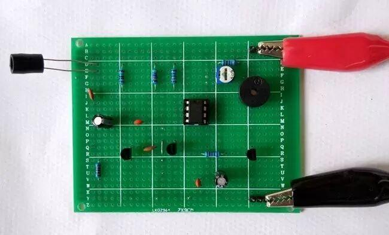
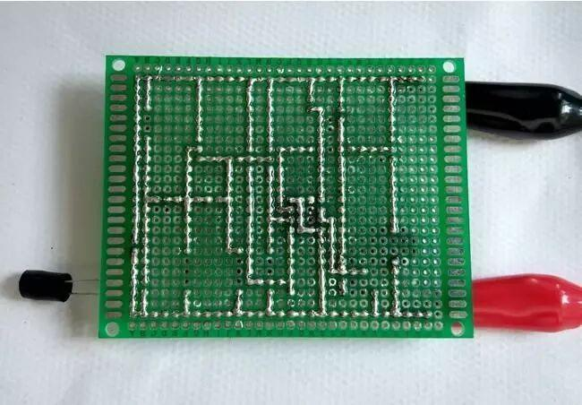

工作重地禁入报警器电路分析与制作
以下文章来源于电工电子技术，作者刘昆山
致力于有效教学理论的研究，专门为学校、乡村、社区分享电工电子知识、单片机C语言编程知识等科普知识，培育科学精神、工匠精神，开展科技作品创新活动，宣传科技创新成果，为中国的科普事业努力奋斗。--刘昆山
我们主张，电子初学者要采用万能板焊接电子制作作品，因为这种电子制作方法，不仅能培养电子爱好者的焊接技术，还能提高他们识别电路图和分析原理图的能力，为日后维修、设计电子产品打下坚实的基础。
本文是在分析工作重地禁入报警器电路原理图的基础上，帮助读者掌握光敏传感器的应用，由NPN三极管构成二级电容耦合放大电路和由555构成的单稳态触发电路、NPN三极管作为开关控制的报警电路等综合电子电路基础知识。通过制作、调试产品，进一步提高实践动手能力。
一、工作重地禁入报警器电路功能介绍
本产品的设计思路来源于超市仓库、档案室等重要的工作场所，禁止外人随意靠近。启动本报警器后，利用人走到报警器前，会产生一个阴影的特点，光敏传感器因光线的变暗而阻值变大的特点，产生一个电压变小的信号，经过放大电路放大后送到单稳态触发电路，控制报警器发出一定时长的报警声音，提醒管理人员查看。报警声音会在（可调节时间为1到7秒）后自动停止，并进入待机状态。
电路采用5V直流电压供电，综合了模拟电路、数字电路、传感器等基础知识，适合各类高校、职业院校的学生学习使用，也可作为课程设计。该作品是学习传感器电路、三极管电路、555时基电路的最好电路模型，也可以移植到其他电路中使用，工作重地禁入报警器电路焊接专用原理图如下：

整个电路原理图由光敏感应电路、两级电容耦合放大电路、单稳态触发电路、报警电路组成。
光敏感应电路由RG1、R1、电源及接地组成，RG1为光敏电阻，入射光越强，阻值越小，入射光越弱，阻值越大。R1为82K的五色环电阻，与光敏电阻RG1组成电阻串联分压电路。
两级电容耦合放大电路由R2、R3、C3、VT1、C4、R4、VT2构成； C3为反馈电容，在电路中起到稳定静态工作点的作用，使电路更加稳定可靠；C4为耦合电容，在电路中起到隔直通交的耦合作用；R2为基极偏置电阻、R3为集电极偏置电阻，确保三极管VT1处于发射结正偏，集电结反偏的放大状态；VT2只有集电极偏置电阻R4，在电路中起到开关作用。
单稳态触发电路由555时基集成电路U1、瓷片电容C5、电位器RP1、电阻R5、电解电容C6构成；瓷片电容C5，起到防止外界干扰，稳定电路的作用；电位器RP1在本电路中接成了可变电阻并串联电阻R5，与电解电容C6构成了RC积分电路，控制单稳态电路输出高电平的时间，可通过TW=1.1RC计算时间。调节RP1可以改变报警器的鸣叫时间。
报警电路由蜂鸣器HA1、三极管VT3、电阻R6构成；三极管VT3在电路中起到开关的作用，控制蜂鸣器HA1是否发声，电阻R6是三极管VT3的基极限流电阻，起到保护作用。
当接通5V直流电压时，且无人靠近报警电路，光敏感应电路的光敏电阻RG1受到一定的光照，阻值偏小。所以在光敏电阻和电阻R1组成的电阻串联分压电路中，A点输出比较高的电压（4.8伏左右）。
两级电容耦合放大电路的三极管VT1的基极电压保持在0.53V左右，VT1的集电极电压保持在1.58V左右，三极管VT1处于临界放大状态。三极管VT2没有基极偏置电阻，只有集电极偏置电阻R4，三极管VT2处于截止状态，VT2的集电极电压保持在4.9V左右。
单稳态触发电路的555的2脚为高电平（4.9V左右），3脚输出低电平，555的内部的放电三极管导通，电容C6通过555的7脚放电， 6脚为低电平，电路保持该状态不变。
报警电路的工作状态受555的3脚输出电压控制，555的3脚输出低电平，使得三极管VT3截止，控制蜂鸣器HA1不发声。
当有人靠近报警器时，光敏电阻RG1的光被阻挡，光照强度降低，阻值增大，使得A点电压下降到3-4.6伏左右。
A点电压下降，但耦合电容C2的电压不能突变，将迫使VT1的基极电压下降到负电压，使得三极管VT1处于截止状态，C点电压上升到4.8V左右。由于耦合电容C4的电压不能突变，将迫使VT2的基极电压上升到0.7V左右，三极管VT2将处于饱和导通状态，VT2的集电极电压（E点）下降到1V左右后立刻恢复到4.8V，该低电平脉冲送到后面的单稳态触发电路。
单稳态触发电路的555的2脚接收到了一个低电平脉冲，触发单稳态触发电路，使得555的3脚输出高电平，555的内部的放电三极管截止，电源经过电阻R5、RP1给电容C6充电，使得555的6脚电压逐渐升高，充电时间由TW=1.1RC计算可得，（R为RP1的可调阻值+电阻R5的阻值，C为C6的电容值，时间可从1秒到7秒左右）电路进入到了一个暂稳状态。
报警电路受555的3脚输出电压控制，当555的3脚输出高电平，使得三极管VT3导通，控制蜂鸣器HA1是发报警声。
此时随着耦合电容C2充电完成，VT1的基极电压恢复到0.53V左右，VT1的集电极电压恢复到1.53V左右。VT2的基极电压恢复到0V，三极管VT2恢复到截止状态，其集电极电压（E点）恢复到4.8V左右，555的2脚电压恢复到4.8V左右。
当555的6脚电压上升到VCC2/3(3.3V左右)时，555的2脚电压也恢复到4.8V左右，单稳态电路的暂稳状态结束，3脚输出低电平，555的内部的放电三极管导通，电容C6通过555的7脚放电， 6脚为低电平，电路保持该状态不变。
报警电路的工作状态受555的3脚输出电压控制，555的3脚输出低电平，使得三极管VT3截止，控制蜂鸣器HA1不发声。
二、工作重地禁入报警器电路安装与调试
1、根据原理图，列出元器件清单


2、元件识别与检测
本电路使用了电阻、电容、电位器、三极管、光敏传感器、蜂鸣器、555时基集成电路等元器件构成。
（1）电阻，本电路使用了5种色环电阻，1K欧姆的电阻上面的5条色环分别为棕黑黑棕棕，47K欧姆的电阻上面的5条色环分别为黄紫黑红棕，82K欧姆的电阻上面的5条色环分别为灰红黑红棕，100K欧姆的电阻上面的5条色环分别为棕黑黑橙棕，10M欧姆的电阻上面的5条色环分别为棕黑黑篮棕。
（2）无极性电容，常见的有瓷片电容。本电路中使用了2种瓷片电容，电容上面标示了“103”的表示电容容量是0.01UF，电容上面标示了“104”的表示电容容量是0.1UF。
（3）有极性电容，常见的有电解电容，本电路中使用了1个1μF的电解电容和1个10μF的电解电容，其引脚有正负之分，不能接反。引脚长的为正，短的为负；旁边有一条白色的为负，另一引脚为正。电容上标有耐压值上25V，容量是10μF和耐压值上50V，容量是1μF。
（4）电位器是可调电阻的一种,通常是由电阻体与转动或滑动系统组成，即靠一个动触点在电阻体上移动，获得部分电压输出。
电位器的电阻体有两个固定端，通过手动调节转轴或滑柄，改变动触点在电阻体上的位置，则改变了动触点与任一个固定端之间的电阻值，从而改变了电压与电流的大小。本电路使用一个500K的电位器，电位器表注了“504”字样。
当把电位器的中间引脚和另外一个引脚短路（连接在一起）时，这个电位器就构成了可调电阻。
可调电阻也叫可变电阻，是电阻的一类，其电阻值的大小可以人为调节，以满足电路的需要。可以逐渐地改变和它串联的用电器中的电流，也可以逐渐地改变和它串联的用电器的电压，还可以起到保护用电器的作用。
（5）三极管，全称应为半导体三极管，也称双极型晶体管，晶体三极管，是一种电流控制电流的半导体器件。其作用是把微弱信号放大成幅值较大的电信号, 也用作无触点开关，俗称开关管。套件中使用的是NPN型的三极管9013，当把有字的面向自己，引脚朝下，从左往右排列是发射极E，基极B，集电极C。如下图所示。

三极管的引脚图
三极管可以工作在截止状态、放大状态，饱和导通状态，这三种状态的改变取决于偏置电阻的大小。
（6）蜂鸣器主要分为压电式蜂鸣器和电磁式蜂鸣器两种类型，在电路中用字母组合HA表示。蜂鸣器还可分为有源蜂鸣器和无源蜂鸣器，这里的“源”不是指电源。而是指震荡源。也就是说，有源蜂鸣器内部带震荡源，所以只要通电就会发声。而无源蜂鸣器内部不带震荡源，所以如果用直流电信号无法令其鸣叫，必须用1K-5K的方波去驱动它才能发出不同频率的声音。有源蜂鸣器比无源蜂鸣器的成本要高，因为有源蜂鸣器里面多个震荡电路。无源蜂鸣器便宜，声音频率可控，可以做出“多来米发索拉西”的效果。
本电路设计采用电磁式5V有源蜂鸣器，由于蜂鸣器的工作电流一般比较大，一般的TTL电压无法直接驱动，所以要利用放大电路来驱动，一般使用三极管构成驱动电路。
（7）光敏传感器，本电路采用的光敏传感器可以用5516型的光敏电阻器代替，光敏电阻器是利用半导体的光电导效应制成的一种电阻值随入射光的强弱而改变的电阻器，又称为光电导探测器；入射光越强，电阻值越小，入射光越弱，电阻值越大。本电路使用的5516型的光敏电阻的暗电阻为5-10K，亮电阻为0.5K。
（8）555定时器的结构及用法
集成时基电路又称为集成定时器或555电路，是一种数字、模拟混合型的中规模集成电路，应用十分广泛。它是一种产生时间延迟和多种脉冲信号的电路，由于内部电压标准使用了三个5K电阻，故取名555电路。

图5集成定时器555及配套的IC管坐
555定时器性能可靠，只需要外接几个电阻、电容，就可以实现多谐振荡器、单稳态触发器及施密特触发器等脉冲产生与变换电路。它也常作为定时器广泛应用于仪器仪表、家用电器、电子测量及自动控制等方面。
它内部包括两个电压比较器，三个等值串联电阻，一个 RS 触发器，一个放电管 T 及功率输出级。它提供两个基准电压VCC /3 和 2VCC /3。
555 定时器的功能主要由两个比较器决定。两个比较器的输出电压控制RS 触发器和放电管的状态。在电源与地之间加上电压，当 5 脚悬空时，则电压比较器 C1 的反相输入端的电压为 2VCC /3，C2 的同相输入端的电压为VCC /3。若触发输入端 TR 的电压小于VCC /3，则比较器C2 的输出为 0，可使 RS 触发器置 1，使输出端 OUT=1。如果阈值输入端 TH 的电压大于 2VCC/3，同时TR 端的电压大于VCC /3，则 C1 的输出为 0，C2 的输出为 1，可将 RS 触发器置 0，使输出为 0 电平。
它的各个引脚功能如下：
1脚：外接电源负端VSS或接地，一般情况下接地。
2脚：低触发端TR。
3脚：输出端Vo
4脚：是直接清零端。当此端接低电平，则时基电路不工作，此时不论TR、TH处于何电平，时基电路输出为“0”，该端正常工作时应接高电平。
5脚：VC为控制电压端。若此端外接电压，则可改变内部两个比较器的基准电压，当该端不用时，应将该端串入一只0.01μF（103）电容接地，以防引入干扰。
6脚：高触发端TH。
7脚：放电端。该端与放电管集电极相连，用做定时器时电容的放电。
8脚：外接电源VCC，双极型时基电路VCC的范围是4.5 -16V，CMOS型时基电路VCC的范围为3-18V，一般用5V。
在1脚接地，5脚未外接电压，两个比较器A1、A2基准电压分别为VCC1/3和VCC2/3的情况下，555时基电路的功能表如下：
555定时器的功能表
输入 | 输出 | |||
清零端4脚 | 高触发端6脚TH | 低触发端2脚TR | 放电管T | 输出功能3脚 |
0 | × | × | 导通 | 直接清零 |
1 | < VCC2/3 | <=VCC1/3 | 截止 | 置1 |
1 | >VCC2/3 | > VCC1/3 | 导通 | 置0 |
1 | < VCC2/3 | > VCC1/3 | 不变 | 保持 |
3、智能仓库火焰报警器电路安装与调试
采用Protel99se绘制电路焊接专用原理图和PCB布局图，从左到右，按照光敏感应电路、两级电容耦合放大电路、单稳态触发电路、报警电路的顺序安装，PCB布局图如下所示。

根据元件布局图和走线图，采用万能版焊接电路，焊接成功的工作重地禁入报警器顶层图如下图所示：

工作重地禁入报警器底层走线入如下图所示：

制作完成后，接上5V直流电压，用手在光敏传感器的上方晃动一下，立刻触发报警器报警，报警声持续3秒钟后自动停止。
如果制作没有成功，请从下面几个方面进行检测维修：
（1）观察法：检查每个元件是否安装正确，特别是555时基集成芯片，蜂鸣器等是否安装正确，三极管9013的三个引脚E、B、C是否正确等。
（2）电阻法：根据原理图检查线路是否正常连通，可用万用表检测每条线路是否导通。电子初学者，焊接的线路多有虚焊、漏焊、假焊，电路搭建错误等情况，所以首先检查每条线路是否焊接好，也就是电气性能是否保证。
（3）电阻法：检测每处GND是否和电源负极接头（单排针J2）是否连通；检测每处VCC是否和电源接头（单排针J1）是否连通。
（4）电压法：当无物体靠近光敏传感器时，测试A点的电压是否为4.8V左右。当有物体靠近光敏传感器时，测试A点的电压是否下降到3-4.6V左右。如果有表示光敏感应电路正常。
（5）电压法：当无物体靠近光敏传感器时，测试B点的电压是否为0.53V左右，测试C点的电压是否为1.53V左右，测试D点的电压是否为0V左右，测试E点的电压是否为4.8V左右。
当有物体靠近光敏传感器时，测试B点的电压是否下降到0V，甚至负电压。测试C点的电压是否上升到4.8V左右，测试D点的电压是否为0.7V左右，测试E点的电压是否有短暂的下降电压。如果有表示两级电容耦合放大电路正常。
（6）电压法：当无物体靠近光敏传感器时，测试555的2脚电压是否为4.8V左右，测试555的8脚电压是否为5V左右，测试555的4脚电压是否为5V左右。测试555的1脚电压是否为0V左右，测试555的6脚电压是否为0V左右，测试555的3脚电压是否为0V左右。
当有物体靠近光敏传感器时，测试555的2脚电压是否有短暂的低电平，测试555的3脚电压是否为5V左右。测试555的6脚电压是否在逐渐升高。如果有表示单稳态触发电路正常。
（7）电压干扰法：用一根导线接在5V电源端，另一端接在F点上，看看蜂鸣器是否发声，如果不发声音，说明报警电路有问题，仔细检查焊接线路并排除故障。
实践证明，通过以上检测，故障基本能排除，实现当有物体靠近光敏传感器时，报警电路发出报警声并保持4秒左右后自动停止。
本模拟电路套件可以科教电子淘宝店购买，地址：
https://item.taobao.com/item.htm?id=535397457810
我是江西冶金职业技术学院的刘昆山老师，请关注微信公众号：电工电子技术（dgdzjs），我们会定期分享电子入门级别的文章给您。我们的官方网站地址是：http://www.dgdz.net